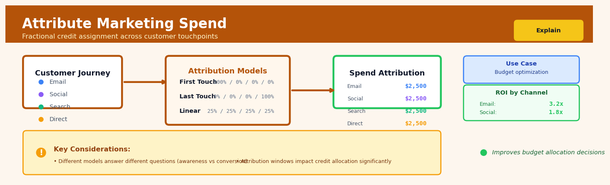

Attribute Marketing Spend#


The biggest mistake I see teams make with marketing attribution is treating it as a one-time analysis rather than a living framework that evolves with your customer journey. Your attribution model should change as your business matures—early-stage companies benefit from last-touch to understand conversion drivers, while mature orgs need multi-touch or data-driven models to optimize across the full funnel. Remember that no single model gives you the complete truth; savvy data scientists run multiple models in parallel and triangulate insights rather than betting everything on one approach.
The 60-Second Version#
What it does: Marketing Mix Modeling reveals how much revenue each advertising channel actually generated, separating what would have happened anyway from what your marketing caused.
When to use it: You’re spending across multiple channels—TV, digital, social—and need to know which investments are working and where to reallocate budget for maximum return.
What you get back: A dollar-in, dollar-out scorecard for each channel showing return on investment, plus recommended budget allocations that maximize total revenue.
At a Glance
Difficulty |
Advanced |
Typical runtime |
Minutes to hours on 2+ years of weekly data |
What you bring |
Historical spend by channel, revenue/conversions, and external factors (seasonality, promotions, competitors) |
What you get |
ROI by channel, incremental lift curves, and optimized budget allocation recommendations |
Heuristix bucket |
Explain — Causal Analysis & Interpretation |
Marketing Mix Modeling measures past effectiveness, not future guarantees—market conditions change, and last year’s winning channel may saturate next quarter.
Learning Objectives#
After reading this chapter, a business user will be able to:
Identify when Marketing Mix Modeling is the right attribution approach for your situation—distinguishing scenarios where you lack user-level tracking, need to measure offline channels, or want to optimize budget allocation across channels over time.
Interpret channel contribution reports and ROI curves to explain to executives which marketing channels are over-invested or under-invested, and quantify the marginal return of shifting budget between them.
Build a quarterly or annual media plan by using MMM results to reallocate spend from saturated channels to those with higher marginal returns, and estimate the revenue impact of different budget scenarios.
After reading this chapter, a data scientist will be able to:
Implement an MMM pipeline that applies adstock transformations to capture lagged effects, fits saturation curves to model diminishing returns, and decomposes time-series into baseline and channel contributions using regression techniques.
Calibrate adstock decay rates, saturation thresholds, and regularization strength by conducting holdout validation, testing parameter sensitivity, and balancing model fit against interpretability requirements.
Diagnose when MMM produces unreliable results—detecting multicollinearity between correlated channels, identifying insufficient spend variation to estimate effects, and validating decomposition credibility through cross-validation and synthetic control checks.
Overview#
Marketing Mix Modeling (MMM) Attribution is a causal inference technique that quantifies the incremental contribution of each marketing channel to a business outcome—typically revenue, conversions, or customer acquisition. This method belongs to the family of econometric decomposition approaches, combining time-series regression with adstock transformations and saturation curves to separate organic baseline performance from marketing-driven lift. The core purpose is to answer the fundamental question: “For every dollar spent on each channel, how much incremental value did we generate?”
When to Use This#
Use this technique when:
You need to allocate marketing budget across channels — When planning quarterly or annual media spend, attribution analysis provides the marginal return on investment (ROI) for each channel, enabling optimal budget distribution.
You want to measure incrementality without experiments — When A/B tests or geo-holdout experiments are infeasible due to cost, logistics, or contamination risk, observational MMM provides causal estimates under stated assumptions.
Your marketing channels have carryover effects — When advertising impact persists beyond the exposure period (e.g., TV campaigns that build brand awareness over weeks), adstock transformations capture this delayed response.
You observe diminishing returns at high spend levels — When doubling spend does not double conversions, saturation curves model the nonlinear relationship between investment and outcome.
You need to decompose revenue into drivers — When executives ask “what drove last quarter’s performance?”, attribution decomposes total outcomes into contributions from each channel, seasonality, promotions, and baseline.
You have at least 2–3 years of weekly or daily data — Sufficient time-series length is required to identify carryover parameters and separate channel effects from confounders.
Do NOT use this technique when:
You have fewer than 52 weekly observations — Insufficient data leads to unstable parameter estimates, particularly for adstock decay rates.
Marketing spend is perfectly correlated across channels — Multicollinearity prevents identification of individual channel effects; consider channel grouping or regularisation.
You need individual-level attribution — MMM operates at the aggregate level; for user-journey attribution, consider multi-touch attribution (MTA) methods instead.
Randomised experiments are feasible and affordable — Well-designed experiments provide stronger causal guarantees; use MMM to complement, not replace, experimental evidence.
Questions This Answers#
Understanding Marketing Effectiveness#
Which marketing channels are actually driving sales versus just taking credit for them?
If we spent nothing on paid search this quarter, how much revenue would we actually lose?
Is our TV advertising working, or are we just seeing sales we would have gotten anyway?
Why did revenue drop 12% in March when we actually increased our Facebook spend by 20%?
How long does it take for our podcast sponsorships to show up in conversions—days, weeks, or months?
Are we getting better or worse returns from Instagram compared to six months ago?
Optimizing Budget Allocation#
Should we shift $500K from linear TV to connected TV next quarter?
If the CMO cuts our budget by 15%, which channels should we protect and which should we reduce?
We’re planning to double our TikTok investment—what incremental revenue can we realistically expect?
Which channels have we maxed out, and where can we still get more bang for our buck?
Is it smarter to increase spend on high-performing channels or test new ones with that extra $2M?
Measuring ROI and Channel Comparison#
What’s the actual ROI for each of our marketing channels, not just last-click attribution?
Which drives more incremental revenue per dollar: paid social or paid search?
Our brand campaign and our performance campaign ran simultaneously—how do we split credit for that sales spike?
How It Works#
Imagine you’re a baker who just had your best Saturday ever—you sold 500 croissants instead of your usual 300. What caused the surge? Was it the flyers you handed out on Friday? The Instagram post Thursday night? The warm weather that brought more foot traffic? Or maybe your competitor was closed for renovations? To figure out what actually worked, you’d look back over many Saturdays, comparing weeks when you did flyers versus when you didn’t, weeks with social posts versus silence, sunny days versus rainy ones. By studying these patterns across dozens of weeks, you could start to isolate which actions genuinely drove extra sales versus what would have happened anyway.
BEFORE: Raw Marketing Data AFTER: Attributed Impact
┌──────────────────────────┐ ┌─────────────────────────┐
│ Week │ TV │ Social │ Rev │ │ Channel │ Base │ Lift │
├──────┼────┼────────┼─────┤ ├─────────┼──────┼───────┤
│ 1 │ 5K │ 2K │ 80K │ → │ TV │ │ +12K │
│ 2 │ 0 │ 3K │ 65K │ → │ Social │ │ +8K │
│ 3 │ 8K │ 0 │ 95K │ → │ Email │ │ +5K │
│ 4 │ 3K │ 1K │ 70K │ → │ Organic │ 45K │ — │
│ ... │... │ ... │ ... │ └─────────┴──────┴───────┘
└──────────────────────────┘
↓ Revenue decomposed into:
Statistical - What happens naturally
Analysis across - What each channel added
many weeks incrementally
Step 1: Gather historical patterns. The model collects weeks or months of data—how much you spent on each marketing channel (TV, social media, email, search ads) alongside the business results (revenue, signups, purchases) for those same time periods. It also pulls in external factors like seasonality, holidays, and competitor activity.
Step 2: Account for advertising’s lingering effects. Marketing doesn’t work like a light switch—a TV ad aired Monday might influence purchases through Friday. The model applies an “adstock” transformation, spreading each dollar spent across multiple time periods to capture this delayed and decaying impact, much like how a stone’s ripples gradually fade across a pond.
Step 3: Model diminishing returns. The hundredth TV ad you run isn’t as effective as the first—you’ve already reached your most interested customers. The model applies saturation curves to reflect this reality: early spending has steep impact, later spending flattens out.
Step 4: Separate the signal from the noise. Using regression analysis, the model runs thousands of comparisons, asking: “In weeks when we spent more on TV but held everything else constant, did revenue go up proportionally?” It does this simultaneously for every channel, teasing apart their individual contributions.
Step 5: Establish the baseline. The model identifies what revenue would have occurred without any marketing—your organic baseline driven by brand strength, word-of-mouth, and existing customer behavior. Everything above this line is the incremental lift that marketing created.
Step 6: Attribute incremental value. Finally, the model assigns each dollar of revenue above baseline to the channel responsible. You get a clear breakdown: TV drove \(12K in incremental revenue, social media added \)8K, email contributed $5K.
The key insight: By observing how outcomes vary when spending changes across many time periods—while statistically controlling for everything else—we can isolate each channel’s true causal impact, separating correlation from causation.
The Intuition#
Imagine you manage a restaurant and want to understand what drives nightly revenue. Some nights you run radio ads, some nights you post on social media, and some nights you do both or neither. Complicating matters, Fridays are always busier than Tuesdays regardless of marketing, and a radio ad heard on Monday might bring customers in on Wednesday. Your goal is to untangle these overlapping effects to determine: if you spent an extra £1,000 on radio next month, how much additional revenue would you expect?
The key insight is that marketing behaves like a leaky bucket. When you pour advertising spend into a channel, the effect doesn’t vanish immediately—it decays gradually over time. A television commercial viewed today creates awareness that persists, diminishing each subsequent day like water leaking from a bucket. The adstock transformation captures this carryover effect by computing a weighted sum of current and past spend, where the weights decay geometrically. A high decay rate means the bucket leaks slowly (long-lasting brand effects); a low decay rate means it leaks quickly (short-term performance channels).
Simultaneously, marketing exhibits diminishing returns. The first thousand pounds spent on a channel reaches the most receptive audience; subsequent spend reaches progressively less responsive segments. This saturation effect means the relationship between spend and outcome is concave—a curve that bends downward. We model this with a transformation (often Hill or exponential saturation) that compresses high spend levels. The combination of adstock and saturation transforms raw spend into an “effective spend” variable that better reflects true marketing pressure.
Finally, we need to control for everything else that drives outcomes: day-of-week effects, seasonality, economic conditions, pricing changes, and competitor activity. The regression model separates these factors from marketing effects, allowing us to attribute observed outcomes to their true causes. The result is a decomposition that tells you: “Of last month’s £2 million revenue, £400,000 came from baseline demand, £600,000 from seasonality, £350,000 from TV, £250,000 from paid search, and so on.”
The Mathematics#
Problem Setup and Notation#
Let \(y_t \in \mathbb{R}^+\) denote the outcome (e.g., revenue, conversions) at time \(t \in \{1, \ldots, T\}\). Let \(x_{c,t} \geq 0\) denote the raw marketing spend on channel \(c \in \{1, \ldots, C\}\) at time \(t\). We model the outcome as:
where:
\(\alpha\) is the baseline intercept (organic demand)
\(A_c(\cdot)\) is the adstock transformation for channel \(c\)
\(f_c(\cdot)\) is the saturation function for channel \(c\)
\(\beta_c\) is the coefficient capturing channel \(c\)’s effect
\(\mathbf{z}_t\) is a vector of control variables (seasonality, holidays, price, etc.)
\(\boldsymbol{\gamma}\) is the coefficient vector for controls
\(\varepsilon_t \sim \mathcal{N}(0, \sigma^2)\) is the error term
Adstock Transformation#
The geometric adstock transformation captures carryover effects:
where \(\theta_c \in [0, 1)\) is the decay parameter for channel \(c\). Expanding recursively:
The half-life of the adstock (time for effect to decay to 50%) is:
For example, \(\theta_c = 0.7\) implies a half-life of approximately 1.9 periods.
Note
Some implementations use a more flexible Weibull adstock that allows non-monotonic decay (effects that peak after a delay). The Heuristix platform supports both geometric and Weibull specifications.
Saturation Function#
The Hill function models diminishing returns:
where:
\(K_c > 0\) is the half-saturation constant (adstock level at which response reaches 50% of maximum)
\(\lambda_c > 0\) is the shape parameter controlling steepness
An alternative is the exponential saturation:
where \(\tau_c > 0\) controls the rate of saturation.
Complete Likelihood and Estimation#
Under Gaussian errors, the log-likelihood is:
where \(\boldsymbol{\Theta} = \{\alpha, \{\beta_c, \theta_c, K_c, \lambda_c\}_{c=1}^C, \boldsymbol{\gamma}, \sigma^2\}\).
The nonlinearity in \(\theta_c\), \(K_c\), and \(\lambda_c\) means closed-form solutions do not exist. Estimation proceeds via:
Bayesian inference — Place priors on all parameters and sample from the posterior using MCMC (e.g., NUTS sampler). This is the preferred approach as it provides uncertainty quantification.
Nonlinear least squares — Minimise \(\sum_t (y_t - \hat{y}_t)^2\) using gradient-based optimisers (L-BFGS-B, trust-region).
Two-stage estimation — Grid search over \(\{\theta_c\}\) and \(\{K_c, \lambda_c\}\), then fit linear regression for \(\alpha\), \(\{\beta_c\}\), \(\boldsymbol{\gamma}\).
Key Assumptions#
No unmeasured confounding — All common causes of spend and outcome are included in \(\mathbf{z}_t\).
Correct functional form — Adstock and saturation transformations accurately capture the true data-generating process.
Stationarity — The effect parameters \(\beta_c\) are constant over time.
No reverse causality — Spend is determined before observing the outcome it affects.
Sufficient variation — Each channel has adequate spend variation for identification.
Attribution Decomposition#
Once parameters are estimated, channel contribution at time \(t\) is:
Total attributed revenue to channel \(c\) over the analysis period:
Return on Ad Spend (ROAS) for channel \(c\):
Marginal ROAS (mROAS) at current spend levels:
where \(\bar{A}_c\) is the mean adstocked spend and \(f_c'(\cdot)\) is the derivative of the saturation function.
Edge Cases#
Zero spend periods: If \(x_{c,t} = 0\) for extended periods, \(\theta_c\) is poorly identified. The adstock decays to zero, providing no information about decay rate.
Perfect multicollinearity: If channels always activate together, individual effects cannot be separated. The sum \(\sum_c \beta_c\) may be identified, but not individual \(\beta_c\).
Saturation at boundary: If all observed spend is far below \(K_c\), the response is approximately linear and \(K_c\) cannot be precisely estimated.
Understanding the Mathematics#
The Adstock Transformation#
The equation:
Read it aloud:
“Today’s advertising effect equals today’s raw spending plus a fraction of yesterday’s already-transformed advertising effect.”
What each symbol means:
\(X_t^{adstock}\) = The cumulative advertising pressure felt by customers today
\(X_t\) = Actual dollars spent on advertising today
\(\lambda\) = The decay rate (between 0 and 1) — how much yesterday’s impact carries forward
\(X_{t-1}^{adstock}\) = Yesterday’s cumulative advertising pressure
A concrete numerical example:
Suppose you spend \(10,000 on TV ads on Monday (\)X_1 = 10,000\() and \)5,000 on Tuesday (\(X_2 = 5,000\)). Your decay rate is \(\lambda = 0.6\).
Monday’s adstock effect: \(X_1^{adstock} = 10,000 + 0\) = \(10,000\)
Tuesday’s adstock effect: \(X_2^{adstock} = 5,000 + 0.6 \times 10,000 = 5,000 + 6,000 = 11,000\)
Notice Tuesday’s total advertising pressure (11,000) exceeds Tuesday’s actual spend (5,000) because Monday’s campaign is still resonating.
Why this equation matters:
Without adstock, we’d assume a TV ad only works the day it airs—ignoring that brand recall and customer consideration persist for days or weeks, massively undervaluing sustained campaigns.
The Saturation Curve#
The equation:
Read it aloud:
“The response to advertising equals the adstocked spend raised to a power, divided by a constant raised to the same power plus the adstocked spend raised to that power.”
What each symbol means:
\(f(x)\) = The actual business impact (e.g., conversions) from advertising
\(x\) = The adstocked advertising spend
\(\alpha\) = The shape parameter (typically between 0 and 1) controlling diminishing returns
\(k\) = The half-saturation point — the spend level where you achieve 50% of maximum possible impact
A concrete numerical example:
Your Facebook campaign has \(k = 50,000\) and \(\alpha = 0.5\). You spend \(x = 25,000\) (after adstock).
At \(25,000 spend, you achieve 41% of the channel's maximum effectiveness. Doubling to \)50,000 only gets you to 50%—not double—demonstrating diminishing returns.
Why this equation matters:
Without saturation curves, the model would predict infinite ROI from infinite spending; this equation captures the reality that your tenth TV spot reaches fewer new customers than your first.
The MMM Regression Equation#
The equation:
Read it aloud:
“Revenue this week equals a baseline amount, plus the sum of each channel’s contribution (its coefficient times its saturated adstock effect), plus the impact of control variables, plus random noise.”
What each symbol means:
\(Y_t\) = Observed revenue (or conversions) in period \(t\)
\(\beta_0\) = Baseline revenue with zero marketing (organic sales)
\(\beta_i\) = The coefficient for channel \(i\) — its marginal effectiveness
\(f_i(X_{i,t}^{adstock})\) = Channel \(i\)’s saturated adstocked spend
\(\gamma Z_t\) = Control variables (seasonality, promotions, competitor activity)
\(\epsilon_t\) = Unexplained random variation
A concrete numerical example:
Week 12 data: TV adstocked+saturated = 0.65, Digital = 0.42, baseline = \(200,000, fitted coefficients \)\beta_{TV} = 80,000\(, \)\beta_{Digital} = 50,000\(, seasonality adds \)15,000.
The model predicts \(288,000 in revenue, with TV driving \)52k and Digital driving $21k incrementally.
Why this equation matters:
This is the engine that separates correlation from causation—isolating each channel’s true incremental contribution by controlling for everything else that drives sales.
The Big Picture#
The mathematics of MMM solves a deceptively hard problem: separating the signal of marketing impact from the noise of seasonality, trends, and randomness. It does this through three layers—adstock captures memory, saturation captures realism, and regression isolates causality—stacked together so we can answer “what would have happened without this channel?” This approach was chosen because simple methods (like last-click attribution or correlation analysis) confuse timing with causation or ignore how advertising actually works in the real world. At its core, the math is building a sophisticated counterfactual machine: it creates a parallel universe where each marketing channel doesn’t exist, then measures the gap between that universe and reality—that gap is the channel’s true value.
Python Implementation#
import numpy as np
import pandas as pd
from scipy.optimize import minimize
from scipy.special import expit
import matplotlib.pyplot as plt
# ============================================================
# Generate Realistic Synthetic Marketing Data
# ============================================================
np.random.seed(42)
T = 156 # 3 years of weekly data
# Time index
dates = pd.date_range(start='2021-01-04', periods=T, freq='W-MON')
# Seasonality: higher in Q4 (holiday season)
week_of_year = np.array([d.isocalendar()[1] for d in dates])
seasonality = 0.3 * np.sin(2 * np.pi * (week_of_year - 10) / 52)
# Marketing spend for 3 channels (with realistic patterns)
tv_spend = np.maximum(0, 50000 + 30000 * np.sin(2 * np.pi * np.arange(T) / 52)
+ np.random.normal(0, 10000, T))
search_spend = np.maximum(0, 20000 + np.random.normal(0, 5000, T)
+ 0.2 * tv_spend) # Some correlation with TV
social_spend = np.maximum(0, 15000 + np.random.normal(0, 4000, T))
# True parameters
TRUE_PARAMS = {
'baseline': 500000,
'seasonality_coef': 100000,
'tv': {'beta': 3.5, 'theta': 0.6, 'K': 80000, 'lambda': 1.5},
'search': {'beta': 5.0, 'theta': 0.3, 'K': 40000, 'lambda': 2.0},
'social': {'beta': 2.0, 'theta': 0.5, 'K': 30000, 'lambda': 1.2},
}
def apply_adstock(x, theta):
"""Apply geometric adstock transformation."""
adstocked = np.zeros_like(x)
adstocked[0] = x[0]
for t in range(1, len(x)):
adstocked[t] = x[t] + theta * adstocked[t-1]
return adstocked
def hill_saturation(x, K, lam):
"""Apply Hill saturation function."""
return (x ** lam) / (K ** lam + x ** lam)
# Generate true outcome with noise
tv_adstock = apply_adstock(tv_spend, TRUE_PARAMS['tv']['theta'])
search_adstock = apply_adstock(search_spend, TRUE_PARAMS['search']['theta'])
social_adstock = apply_adstock(social_spend, TRUE_PARAMS['social']['theta'])
tv_saturated = hill_saturation(tv_adstock, TRUE_PARAMS['tv']['K'], TRUE_PARAMS['tv']['lambda'])
search_saturated = hill_saturation(search_adstock, TRUE_PARAMS['search']['K'], TRUE_PARAMS['search']['lambda'])
social_saturated = hill_saturation(social_adstock, TRUE_PARAMS['social']['K'], TRUE_PARAMS['social']['lambda'])
revenue = (TRUE_PARAMS['baseline']
+ TRUE_PARAMS['seasonality_coef'] * seasonality
+ TRUE_PARAMS['tv']['beta'] * tv_saturated * 100000 # Scale for interpretability
+ TRUE_PARAMS['search']['beta'] * search_saturated * 50000
+ TRUE_PARAMS['social']['beta'] * social_saturated * 30000
+ np.random.normal(0, 20000, T))
# Create DataFrame
df = pd.DataFrame({
'date': dates,
'revenue': revenue,
'tv_spend': tv_spend,
'search_spend': search_spend,
'social_spend': social_spend,
'seasonality': seasonality
})
print("Data Summary:")
print(df.describe().round(0))
# ============================================================
# Marketing Mix Model Implementation
# ============================================================
class MarketingMixModel:
"""
Marketing Mix Model with adstock and saturation transformations.
Estimates channel contributions using nonlinear optimisation.
"""
def __init__(self, df, outcome_col, spend_cols, control_cols=None):
self.df = df.copy()
self.outcome_col = outcome_col
self.spend_cols = spend_cols
self.control_cols = control_cols or []
self.n_channels = len(spend_cols)
self.params_ = None
self.results_ = None
def _transform_channel(self, spend, theta, K, lam):
"""Apply adstock then saturation."""
adstocked = apply_adstock(spend, theta)
saturated = hill_saturation(adstocked, K, lam)
return saturated, adstocked
def _predict(self, params, return_components=False):
"""Generate predictions from parameters."""
baseline = params[0]
idx = 1
# Control coefficients
control_contrib = np.zeros(len(self.df))
for i, col in enumerate(self.control_cols):
control_contrib += params[idx] * self.df[col].values
idx += 1
# Channel
## Visualisations


## Using This in Heuristix
### What Data You'll Need
The Marketing Mix Modeling node expects **aggregated time-series data** where each row represents a time period (typically weekly or daily). You'll need:
- **Date column**: Your time dimension (Date type)
- **Outcome column**: The metric you're trying to explain—revenue, conversions, signups (Numeric)
- **Marketing spend columns**: One column per channel with spend amounts (Numeric)
- **Control variables** (optional): Seasonality indicators, promotions, external factors (Numeric or Categorical)
**Example input shape:**
| date | revenue | tv_spend | digital_spend | search_spend | promo_flag |
|------------|---------|----------|---------------|--------------|------------|
| 2024-01-07 | 125000 | 15000 | 8000 | 5000 | 0 |
| 2024-01-14 | 142000 | 18000 | 8500 | 5200 | 1 |
| 2024-01-21 | 138000 | 16000 | 9000 | 5500 | 0 |
### Configuration Parameters
| Parameter | What It Controls | Default | When to Change |
|-----------|------------------|---------|----------------|
| **Outcome Variable** | The metric you're modeling (dependent variable) | First numeric column | Set to your KPI—revenue, conversions, etc. |
| **Date Column** | Time dimension for the model | Auto-detected | Change if multiple date fields exist |
| **Marketing Channels** | Which columns represent marketing spend | All numeric columns | Deselect non-marketing columns like revenue |
| **Adstock Type** | How advertising effects decay over time | Geometric | Use "Weibull" for channels with delayed peaks (TV, brand campaigns) |
| **Adstock Window** | Maximum weeks of carryover effect | 8 weeks | Increase to 12+ for slow-burn channels; reduce to 2-4 for direct response |
| **Saturation Function** | Models diminishing returns curve | Hill (S-curve) | Rarely needs changing; "Exponential" for strictly diminishing returns |
| **Include Trend** | Adds time trend to capture organic growth | Enabled | Disable if your data is already detrended |
| **Seasonality Period** | Detects repeating patterns | 52 (weekly data) | Set to 7 for daily data, 12 for monthly |
| **Prior Scale** | How tightly to constrain parameters | 0.5 | Increase to 1.0 for more flexibility with sufficient data (100+ observations) |
### What You'll Get Back
**Added Columns:**
- `predicted_outcome`: Model's fitted values
- `baseline`: Organic performance without marketing
- `[channel]_contribution`: Incremental outcome driven by each channel
**Metrics Display:**
- **R²**: Overall model fit (aim for >0.7)
- **MAPE**: Average prediction error percentage
- **Channel ROI**: Return per dollar spent by channel
- **Decomposition %**: What percent of total outcome each driver explains
**Visualizations:**
- **Waterfall chart**: Shows baseline + each channel's contribution building to actual outcome
- **Response curves**: Saturation curves showing efficiency at different spend levels
- **Time series decomposition**: Actual vs. predicted with channel contributions stacked
- **ROI comparison**: Bar chart ranking channels by effectiveness
### Connecting Downstream
This node typically flows into:
- **Scenario Planning nodes**: Use the fitted model to simulate "what if we shift 20% of TV budget to digital?"
- **Budget Optimization**: Feed ROI curves into portfolio optimization to maximize outcome within budget constraints
- **Reporting Dashboards**: Export contribution data for executive summaries
- **Forecasting nodes**: Use baseline trends + planned spend to project future outcomes
### Quick Start: Basic MMM Setup
1. **Connect your data** with date, outcome metric, and spend columns for each channel
2. **Select your outcome variable** from the dropdown (e.g., "revenue")
3. **Multi-select your marketing channels** (hold Ctrl/Cmd to select TV, digital, search, etc.)
4. **Leave adstock at 8 weeks** for your first run—you can refine later
5. **Click "Run Model"** and review the R² score (should be >0.65 for actionable insights)
6. **Check the waterfall chart** to see which channels contribute most
7. **Export the ROI table** to share quick wins with stakeholders
### Practical Tips from the Pros
**Tip 1**: Start with weekly aggregation even if you have daily data. Daily models often overfit to noise, and most marketing effects work at weekly timescales anyway.
**Tip 2**: If a channel shows negative contribution, it's likely correlated with another variable. Check for multicollinearity or try removing highly correlated channels.
**Tip 3**: Don't trust the model if you have less than 18 months of data—you need enough cycles to separate seasonality from channel effects.
**Tip 4**: The first channel you test should always be something with clear on/off periods (like a campaign that paused). If the model doesn't detect that obvious effect, your data needs refinement.
**Tip 5**: Export the response curves before budget planning meetings. Showing executives where diminishing returns kick in is far more persuasive than ROI tables alone.
## Config Recipes
### Recipe 1: Quick Exploration for New Datasets
**When to use:** You're evaluating whether MMM is viable for your data before investing in a full build—testing signal strength, understanding channel relationships, and identifying obvious data quality issues.
**Settings:**
| Parameter | Value | Why |
|-----------|-------|-----|
| `adstock_max_lag` | 4 | Limits computational load while capturing immediate effects |
| `model_type` | `ridge` | Fast, interpretable, handles multicollinearity without tuning |
| `n_iterations` | 1000 | Enough for convergence screening, not production stability |
| `saturation_function` | `none` | Removes non-linear complexity from initial diagnostic |
| `train_test_split` | 0.8 | Standard exploration ratio for pattern detection |
| `seasonality_mode` | `multiplicative` | Captures most real-world patterns without custom specification |
**What you get:** A 15-30 minute run that reveals whether channels show directional signal and whether your outcome variable has sufficient variance for decomposition.
**Trade-off:** No saturation modeling means you'll overestimate linear returns and miss diminishing returns effects that matter for budget allocation.
---
### Recipe 2: Production-Grade Attribution Model
**When to use:** Building a model for quarterly budget planning where stakeholders will redistribute 6–7 figure budgets based on your ROI estimates.
**Settings:**
| Parameter | Value | Why |
|-----------|-------|-----|
| `adstock_max_lag` | 13 | Captures full quarterly carry-over effects |
| `model_type` | `bayesian_ridge` | Provides uncertainty intervals for ROI confidence bounds |
| `n_iterations` | 10000 | Ensures posterior convergence and stable coefficient estimates |
| `saturation_function` | `hill` | Models diminishing returns with flexible inflection points |
| `control_variables` | `[seasonality, trend, events, macroeconomic]` | Isolates marketing effects from confounders |
| `holdout_validation` | `time_series_cv` with 4 folds | Protects against overfitting to recent volatility |
| `prior_strength` | 0.3 | Weakly informative—respects domain knowledge without overriding data |
**What you get:** Defensible, uncertainty-quantified ROI estimates suitable for executive presentation and financial commitment.
**Trade-off:** Runtime of 2-6 hours and requires careful prior elicitation for each channel—not viable for rapid iteration.
---
### Recipe 3: High-Multicollinearity Environments
**When to use:** Your channels are highly correlated (e.g., paid search, shopping, and brand campaigns all spike during promotions), causing unstable coefficient estimates.
**Settings:**
| Parameter | Value | Why |
|-----------|-------|-----|
| `model_type` | `elastic_net` | L1 penalty handles feature selection when channels are redundant |
| `alpha` | 0.5 | Balances L1 (sparsity) and L2 (stability) |
| `channel_grouping` | `enabled` | Combines correlated channels into meta-channels pre-modeling |
| `vif_threshold` | 5 | Flags problematic collinearity before fitting |
**What you get:** Sparse, interpretable coefficients that don't flip signs between model runs.
**Trade-off:** You lose granular channel attribution—grouped channels share credit collectively.
---
### Recipe 4: Product Launch Attribution
**When to use:** Measuring marketing effectiveness during a new product launch where no baseline exists and marketing drives 100% of initial awareness.
**Settings:**
| Parameter | Value | Why |
|-----------|-------|-----|
| `baseline_estimation` | `disabled` | No organic demand exists yet—all volume is marketing-attributed |
| `time_window` | First 90 days only | Avoids mixing launch dynamics with steady-state behavior |
| `adstock_priors` | Channel-specific decay from comparable launches | Borrows strength from historical patterns |
**What you get:** Full credit assignment to marketing without incorrectly partitioning to non-existent organic demand.
**Trade-off:** Model is non-reusable once product reaches maturity—requires separate steady-state model.
## Business Applications
**Financial Services**
A national credit card issuer spending £45M annually across TV, paid search, direct mail, and comparison sites faced a critical challenge: their CMO couldn't definitively prove which channels actually drove new account applications versus merely capturing existing demand. Marketing Mix Modeling attribution disaggregated 18 months of application data, revealing that their premium TV spots generated only 12% incremental lift while direct mail to pre-qualified segments delivered 67% incremental contribution at one-third the cost-per-acquisition. The reallocation delivered £8.3M in cost savings within the first year while maintaining application volumes, and the CFO finally approved the marketing budget increase the team had requested for three years.
**Retail**
A fast-fashion e-commerce retailer with 1.8M SKUs across eight European markets was hemorrhaging budget on overlapping Facebook and Instagram campaigns, unable to separate the individual channel effects from their combined social presence. MMM attribution with proper adstock decay curves revealed that Instagram drove 41% more incremental revenue per euro spent than Facebook, and that their TV campaigns created a 2.3-week halo effect that amplified all digital channel performance by 28%. By shifting €3.2M from Facebook to Instagram and timing digital spend surges to follow TV flights, they increased overall marketing efficiency (revenue per euro) from €4.20 to €5.85 within two quarters.
**Healthcare**
A private hospital group operating 23 facilities across the US Southeast struggled to justify their $12M annual marketing spend to their board, particularly for brand awareness campaigns that didn't immediately drive appointment bookings. Attribution modeling isolated the baseline demand (seasonal illness patterns, demographic growth) from marketing-driven patient acquisition, demonstrating that their regional radio campaigns generated 31% of new patient consultations with a six-week lag—a pattern completely invisible in last-click digital attribution. The analysis secured board approval for a three-year brand investment strategy and identified that reducing Google Ads spend by $340K would only decrease appointments by 2%, redirecting funds to high-performing channels instead.
**Insurance**
A mid-sized UK home insurance provider discovered through MMM attribution that their price comparison site spend—representing 58% of their digital budget—was largely capturing customers who would have found them anyway through organic search or direct visits. The model quantified true incrementality at just 23% for comparison sites versus 71% for their targeted display remarketing campaigns. Reallocating £1.8M from comparison sites to display and reducing their cost-per-quote from £47 to £31 while maintaining policy volumes transformed their unit economics and competitive positioning.
**Manufacturing**
A B2B industrial equipment manufacturer with a 9-18 month sales cycle never believed marketing attribution could work for their business, assuming only direct sales efforts mattered. MMM modeling across three years of data proved that their trade publication advertising and industry conference sponsorships created measurable demand spikes with 4-6 month lag periods, contributing $23M in incremental pipeline (18% of total). This evidence shifted their sales-dominated culture, securing a 40% marketing budget increase and creating the company's first VP of Marketing role.
**SaaS/Tech**
A B2B SaaS platform serving mid-market finance teams spent $890K monthly across six channels but relied on last-click attribution that systematically undervalued their podcast sponsorships and content syndication efforts. Marketing mix modeling revealed these "awareness" channels drove 34% incremental trial signups with 3-4 week adstock effects, while their overinvested paid search merely captured branded demand from users already familiar with the product. The reallocation increased trial-to-paid conversion efficiency by 28% and provided the data foundation for their Series B fundraising deck.
**Telecoms**
A regional mobile carrier launching 5G service needed to separate the impact of their aggressive promotional pricing from their $8M launch marketing campaign. MMM attribution isolated that while price drove 64% of switchers, their targeted digital video and out-of-home campaigns contributed an additional 19% lift in metropolitan areas—incremental customers who would not have switched on price alone. This £4.7M in incremental revenue validated the marketing investment and shaped rollout strategy for subsequent markets.
## Worked Example
Sarah Chen, a senior data scientist at Riverway Health, was invited to a tense Monday morning meeting with the CMO and VP of Growth. The company had spent $2.1 million on digital marketing in Q4, and while overall patient enrollment had grown 18%, no one could agree on which channels deserved credit—or budget. "Facebook says they drove 40% of conversions," the paid social lead argued. "Google Ads claims 35%," countered the SEM manager. The CMO turned to Sarah: "We're planning Q1 spend. I need to know what's actually working."
Sarah pulled 18 months of weekly data from their data warehouse: marketing spend by channel, new patient enrollments, seasonality indicators, and competitive events. She knew the data had quirks—a tracking outage in July, a major flu season spike in January, and the fact that their brand campaign didn't have clean conversion tracking. Here's what the first few rows looked like:
| week_start | tv_spend | paid_search_spend | paid_social_spend | new_patients | flu_season |
|------------|----------|-------------------|-------------------|--------------|------------|
| 2023-01-02 | 45000 | 12000 | 8500 | 412 | 1 |
| 2023-01-09 | 38000 | 11500 | 9200 | 389 | 1 |
| 2023-01-16 | 42000 | 13200 | 7800 | 401 | 1 |
| 2023-01-23 | 0 | 14100 | 10500 | 298 | 0 |
Sarah opened the Attribute Marketing Spend node and started making decisions. She set the target variable to `new_patients` and selected TV, paid search, and paid social as spend channels. For the adstock transformation, she chose a geometric decay with a half-life of 3 weeks for TV—she'd seen research suggesting TV ads lingered in memory—but only 1 week for digital channels, which felt more immediate. She enabled saturation curves because she suspected diminishing returns, especially for paid search where they were already bidding on every relevant keyword. She added `flu_season` as a control variable and set the model to reserve the last 12 weeks for validation.
The model ran for two minutes. When the results appeared, Sarah leaned forward. The coefficients told a story that contradicted the platform-reported attribution entirely:
| Channel | Spend (Q4) | Incremental Patients | Cost per Incremental Patient | ROAS |
|---------|------------|---------------------|------------------------------|------|
| TV | $850,000 | 287 | $2,961 | 2.8x |
| Paid Search | $720,000 | 198 | $3,636 | 2.3x |
| Paid Social | $530,000 | 89 | $5,955 | 1.4x |
The baseline model predicted 1,124 patients would have enrolled anyway through organic and word-of-mouth channels. Marketing contributed an additional 574 patients—TV alone drove half of that lift, despite getting blamed for being "untrackable." Paid social, which claimed the highest last-click conversions, actually had the weakest incremental impact and was already deep into diminishing returns.
The insight hit Sarah immediately: they'd been over-investing in paid social because it was easy to measure, not because it was effective. TV's impact was diffused over weeks and couldn't be captured in a 7-day attribution window, so it had been systematically undervalued. The adstock decay revealed that TV ads from three weeks prior were still driving 25% of their peak effect.
Sarah presented the findings to the executive team two days later. She showed them the saturation curves—paid social spending beyond $400K per quarter was generating almost no incremental lift. The recommendation was clear: shift $200K from paid social to TV, and increase paid search moderately since it hadn't hit saturation yet. The CMO approved the reallocation for Q1.
Three months later, the results validated Sarah's model. With the adjusted spend mix, they enrolled 441 new patients in Q1 at a 19% lower cost per acquisition than the previous year, despite flat total spend.
If Sarah could do it over, she'd have run more sensitivity analyses on the adstock parameters—she'd chosen 3 weeks for TV based on intuition and literature, but testing 2–4 weeks would have made her more confident. She also wished she'd had data on competitor spending; their model assumed baseline was stable, but a rival health system had launched an aggressive campaign in March that likely suppressed their organic enrollments.
Here's the core of Sarah's analysis script:
```python
import pandas as pd
from heuristix.causal import MarketingMixModel
# Load weekly data
df = pd.read_csv('riverway_marketing_data.csv')
# Initialize MMM with adstock transformation
mmm = MarketingMixModel(
adstock_type='geometric',
adstock_params={
'tv_spend': {'half_life': 3},
'paid_search_spend': {'half_life': 1},
'paid_social_spend': {'half_life': 1}
},
saturation=True,
saturation_function='logistic'
)
# Fit model with controls
mmm.fit(
data=df,
target='new_patients',
spend_columns=['tv_spend', 'paid_search_spend', 'paid_social_spend'],
control_variables=['flu_season'],
validation_weeks=12
)
# Extract channel contributions
contributions = mmm.get_channel_contributions()
roas = mmm.calculate_roas()
print(contributions)
print(f"\nBaseline (no marketing): {mmm.baseline_prediction:.0f} patients")
Interpreting Your Results#
You’ve just run your first Marketing Mix Model and you’re staring at a dashboard of coefficients, curves, and contribution percentages. Here’s exactly what you’re looking at and what it means for your marketing budget.
Revenue Contribution by Channel#
What you’re seeing: A bar chart or table showing what percentage of your total revenue each marketing channel drove. If it says “Paid Search: 23%,” that means 23% of your revenue during the study period came from paid search activity—not just the last-click conversions, but the actual incremental lift that spending created.
Concrete benchmarks:
Below 5%: This channel is a minor player. Either it’s genuinely ineffective, underinvested, or serves a support role (like remarketing).
5–15%: Solid contributor. Expected range for secondary channels in a diversified mix.
15–30%: Major driver. These are your workhorses—treat budget decisions here carefully.
Above 30%: Dominant channel. This concentration creates risk. Verify the model isn’t overattributing due to correlation with external factors.
Red flags: If your largest spend channel shows <10% contribution, either you’re massively inefficient or the model has a data quality issue. If “Baseline” (organic/non-marketing) is below 20%, your model may be overattributing to marketing—most businesses have significant organic demand.
Return on Ad Spend (ROAS) by Channel#
What you’re seeing: For every dollar spent, how many dollars of revenue did each channel generate? ROAS of 3.5 means \(1 spent returned \)3.50 in revenue.
Concrete benchmarks:
Below 1.0: You’re losing money on a revenue basis. Acceptable only for strategic new customer acquisition if LTV justifies it.
1.0–2.5: Break-even to modest efficiency. Common for awareness channels (TV, display) or competitive categories.
2.5–5.0: Strong performance. Most direct-response channels should land here.
Above 5.0: Exceptional—or you’re underspending. Check if you’re hitting saturation; there may be room to scale.
Red flags: Nearly identical ROAS across all channels (within 0.5 of each other) suggests model convergence issues. ROAS above 10 for mature channels means either data errors or you’ve been drastically underspending for years—both worth investigating.
Adstock Decay Rate#
What you’re seeing: How quickly each channel’s impact fades after you stop spending. A decay rate of 0.3 means 30% of the effect carries over to the next time period; 0.7 means 70% evaporates immediately.
Concrete benchmarks:
0.0–0.3: Immediate response channels (paid search, affiliates). Impact vanishes within days.
0.3–0.6: Medium persistence (social media, display). Effects last weeks.
0.6–0.9: Long-lasting impact (TV, brand campaigns, PR). Builds over months.
Red flags: Paid search with decay >0.5 is suspicious—suggests model is capturing seasonality rather than true channel effect. Brand TV with decay <0.3 means you’re likely measuring direct response to TV ads, not brand building.
Saturation Curves#
What you’re seeing: A chart showing how response changes as you increase spend. The curve flattening means you’re hitting diminishing returns.
Reading it: If you’re currently spending at a point where the curve is still steep, you have room to scale. If you’re on the flat part, additional dollars yield minimal returns.
Red flags: A curve that never saturates (keeps rising linearly) suggests the model hasn’t seen enough spend variation to learn your limits. Immediate saturation (curve flattens right away) with high ROAS means you should have been spending more—investigate why you’re constrained.
Sanity Check Checklist#
Before trusting these results, verify:
Sum of contributions ≈ 100% of your revenue (±5%). If not, check your input data completeness.
Baseline between 20–60%. Outside this range suggests model misspecification.
ROAS rank order matches your intuition for at least your top 3 channels. If brand search shows lower ROAS than display, dig deeper.
Adstock patterns align with channel type. Performance channels should decay fast; brand channels slow.
Confidence intervals don’t span zero for major channels. If they do, you lack statistical power—need more data or longer time window.
Good Enough to Act On?#
You can make budget reallocation decisions when: (1) your model R² >0.7, (2) confidence intervals for ROAS between your best and worst channels don’t overlap, and (3) results remain stable when you re-run with the most recent 4 weeks excluded. If all three conditions hold, your insights are actionable. Start by reallocating 10–15% of budget from lowest to highest ROAS channels and monitor results.
Decision Guidance#
What This Result Is Telling You#
Marketing Mix Modeling reveals which of your marketing channels are genuinely driving incremental business results versus merely being present when customers convert. When you see a channel with a high return on ad spend (ROAS) in MMM—say, 3.5x—it means that for every dollar you invested in that channel, you generated $3.50 in revenue that would not have occurred without that spending. This is fundamentally different from last-click attribution, which simply credits the last touchpoint before conversion. MMM answers the harder question: what would have happened if we had spent nothing at all?
The model also reveals saturation points and decay rates for each channel. A steep saturation curve indicates you’re approaching diminishing returns quickly—additional spend yields progressively less impact. Channels with long adstock decay (3-6 weeks) build sustained momentum over time, while those with short decay (1-2 days) require continuous investment to maintain results. Your baseline component shows the revenue you’d generate with zero marketing spend, driven by brand equity, word-of-mouth, seasonality, and organic demand.
These insights directly inform budget allocation decisions. If two channels both show positive ROAS but one operates at 60% of its saturation point while the other is at 95%, you should shift budget toward the under-saturated channel. Similarly, understanding adstock helps you balance short-term performance channels (paid search, display) with long-term brand-building investments (TV, sponsorships) that compound their effects over weeks or months.
Decision Points#
If you see this… |
It means… |
Recommended action |
Who acts on this |
|---|---|---|---|
Channel ROAS > 2.0x and operating below 70% saturation |
Strong incremental returns with room to scale efficiently |
Increase budget by 20-40% next quarter and re-measure |
CMO, Performance Marketing Lead |
Channel ROAS between 0.8x - 1.2x or confidence interval spans 1.0 |
Marginal or uncertain incremental value; may be riding organic trends |
Hold budget flat; test a 30% reduction in one market to validate true impact |
Marketing Director, Analytics Lead |
High-spend channel shows negative coefficient or ROAS < 0.5x |
Likely cannibalization, poor targeting, or mis-attribution of baseline |
Reduce spend by 50% as pilot; investigate creative quality and audience overlap |
Channel Manager, CMO |
Channel adstock half-life exceeds 4 weeks and ROAS > 1.5x |
Long-term brand-building effect that compounds over time |
Protect budget through seasonal downturns; measure with 90+ day horizons |
Brand Marketing Lead, CFO |
Model R² < 0.70 or baseline captures > 80% of variance |
Marketing’s incremental contribution is either small or poorly measured |
Commission data quality audit; validate external factors (competitors, macro trends) |
Head of Analytics, Finance |
When to Proceed vs. Investigate Further#
Proceed with confidence when:
Model R² exceeds 0.75 and residuals show no systematic patterns
Confidence intervals for top 3 channels exclude zero (statistically significant effects)
Out-of-sample validation maintains MAPE below 10%
Results align directionally with prior geo-experiments or holdout tests
Proceed with caution when:
Model R² between 0.60-0.75, suggesting moderate explanatory power
Confidence intervals are wide (>50% of point estimate) but directionally consistent
Major channels show saturation between 70-90%—scaling decisions need close monitoring
Time period includes unprecedented events (COVID, supply shocks) that may not repeat
Investigate before acting when:
Coefficients contradict controlled experiments or known channel mechanics
Multicollinearity (VIF > 5) exists between highly correlated channels
Adstock parameters produce implausible decay patterns (>12 weeks for performance channels)
Structural breaks detected mid-period (regime changes in channel behavior)
Do not use these results yet when:
Model R² below 0.60 or baseline exceeds 85% of total variance
Fewer than 18-24 months of consistent data available
Major measurement changes occurred mid-period (attribution windows, conversion definitions)
Key channels missing due to data unavailability
The Cost of Getting This Wrong#
Misinterpreting MMM results leads directly to budget waste and missed growth opportunities. A company that incorrectly identifies a saturated brand channel as high-performing may pour an additional \(2M into TV advertising that generates only \)400K in incremental revenue—a catastrophic -80% return that could have funded three emerging digital channels with 4x ROAS. Conversely, cutting a genuinely effective channel because its last-click metrics look weak can crater revenue within weeks, as one retailer discovered after eliminating paid social (thinking it was merely assisting) and watching new customer acquisition drop 35%. Perhaps most insidiously, failing to account for saturation curves leads to linear scaling assumptions: “If \(100K drove \)300K in revenue, then \(1M will drive \)3M.” Instead, you hit diminishing returns at \(400K spend, wasting \)600K on inefficient impressions while starving other channels of budget. The opportunity cost compounds when competitors correctly allocate to under-saturated channels and capture market share during your period of inefficient overspend.
Common Pitfalls#
The Vanishing Baseline
Here’s what happened: A senior marketing analyst at a B2B SaaS company ran their first MMM and was thrilled to see that their marketing channels explained 95% of revenue variance. They presented to the CMO showing that paid search contributed \(2.3M and email contributed \)1.8M. The CMO asked, “What would our revenue be if we turned off all marketing?” The analyst went pale—their model predicted nearly zero revenue without marketing spend, despite having a product with 78% revenue from renewals.
Why it happens: Analysts forget to include a proper intercept term or trend component that captures organic baseline. The model attributes all predictable patterns to whatever variables are available, and marketing spend becomes a proxy for time itself.
How to detect it: Run a scenario where all marketing spend equals zero. If predicted revenue drops below 40-60% of current levels for an established business with existing customers, your baseline is broken. Check if your model’s intercept is near zero or if you’re missing seasonality terms.
The fix: Add explicit baseline components—day-of-week effects, monthly trends, holiday indicators, and for subscription businesses, a lagged revenue term that captures customer lifetime patterns independent of new acquisition.
The Correlation Promotion
Here’s what happened: A junior data scientist at a retail chain built an MMM showing that their store events channel had a 15:1 ROI, far exceeding their 3:1 ROI for paid social. They recommended shifting 60% of budget to events. Three months later, revenue dropped 18%. Turns out store events were scheduled during historically high-traffic periods—the model had confused “what happens when we’re already busy” with “what causes us to be busy.”
Why it happens: The cognitive trap is confusing predictive power with causal impact. Just because a variable helps predict outcomes doesn’t mean it drives them. Events correlated with revenue peaks without causing them.
How to detect it: Look at the timing. If a channel’s spend always clusters during known seasonal peaks, check if its coefficient drops substantially when you add proper seasonal controls. Plot channel spend against deseasonalized baseline—if they’re still highly correlated (r > 0.6), you have endogeneity.
The fix: Include richer time controls, consider instrumental variables if you have pricing or competitive data, or better yet, look for natural experiments where the channel ran during off-peak periods.
The Adstock Illusion
Here’s what happened: An experienced marketing scientist was fitting adstock parameters for a CPG brand’s TV campaign. They found that a 12-week half-life maximized R-squared, suggesting TV ads influenced purchases three months later. They proudly presented this “long-term brand building” effect. A skeptical analyst checked the raw data—the brand ran TV in consistent flights every quarter, creating a pattern the model mistook for long decay rather than repeated pulses.
Why it happens: Adstock transformations are flexible enough to fit many patterns. When spend is periodic, long decay curves can mimic what’s actually just regular spending creating regular bumps.
How to detect it: If your adstock half-life exceeds 4-6 weeks for direct response or 8-10 weeks for brand awareness, check your spend pattern. Plot raw spend against the adstocked variable—if they look nearly identical except smoothed, your decay parameter is just smoothing, not measuring memory.
The fix: Test your model on holdout periods where spending patterns differ. If the adstock parameter that fits historical data fails to predict new periods, revert to shorter, more conservative decay assumptions.
The Saturation Mirage
Here’s what happened: A business intelligence manager built an MMM showing diminishing returns for paid search—the model suggested they were 80% saturated and should cut spend by half. They did, and conversion volume dropped 40%, not the 8% the model predicted. The issue: they’d modeled weekly data with saturation curves, but paid search bidding creates daily micro-saturation that averages out at weekly grain.
Why it happens: Saturation curves are fit at whatever time granularity your data provides. Weekly aggregation hides the fact that daily spend already operates on the flat part of the curve some days and the steep part others.
How to detect it: If your data is weekly or monthly but spend fluctuates significantly within those periods, check spend standard deviation. If weekly spend varies by more than 30%, your aggregation is hiding true response dynamics.
The fix: Model at daily grain if possible, or add spend variance as a separate predictor to capture within-period saturation effects.
The Multicollinearity Handwave
Here’s what happened: A consultant delivered an MMM where Facebook and Instagram coefficients were both present but had opposite signs—Facebook showed positive ROI while Instagram showed negative, despite both being Meta platforms targeting similar audiences. When questioned, they said “the model picked up different creative strategies.” Actually, the two spend variables had 0.89 correlation and the model couldn’t tell them apart.
Why it happens: Practitioners know multicollinearity is bad but underestimate how badly it distorts coefficients. Variance inflation factors above 5 don’t just add noise—they can flip signs.
How to detect it: Calculate VIF for all marketing variables. Anything above 5 is suspect, above 10 is unusable. Also check if coefficients flip signs or change magnitude dramatically when you remove one correlated variable.
The fix: Combine highly correlated channels into a single “Meta” or “Google” variable, or use regularization (ridge regression) to stabilize estimates, accepting that you’ll measure platforms, not individual channels.
The Prophet’s Folly
Here’s what happened: A data analyst used Facebook Prophet to forecast baseline, then attributed the residual to marketing. Their model showed TV driving 40% of incremental revenue. But Prophet had smoothed away a genuine step-change in organic traffic from an app store feature, and the model credited that entire jump to a TV campaign that happened to launch the same week.
Why it happens: Automated forecasting tools optimize for prediction accuracy, not causal decomposition. They’ll smooth over real structural changes if those changes look like outliers.
How to detect it: Plot your baseline forecast against actual revenue with marketing events marked. If the baseline forecast consistently “misses” in the same direction right after major campaigns, you’re attributing baseline shifts to marketing.
The fix: Manually annotate known structural changes—product launches, pricing changes, PR events—and include them as control variables rather than letting the baseline absorb or credit them to concurrent marketing.
Common Misconceptions#
“Last-click attribution tells us which channels are actually driving conversions”
Why people believe this: It’s intuitively satisfying. Someone clicks a paid search ad and converts—that ad clearly caused the sale. The logic feels airtight, and the data is clean, immediate, and ties directly to business outcomes. Most analytics platforms default to this view, reinforcing its legitimacy through ubiquity.
The truth: Last-click attribution measures correlation at the moment of conversion, not causation across the customer journey. It systematically overvalues bottom-funnel channels (paid search, retargeting) that capture demand already created by upper-funnel investments (TV, display, social). A customer who sees a TV ad, researches the brand, gets retargeted, then searches for your brand name didn’t convert because of that final search click—they converted because of the entire sequence. Marketing Mix Modeling reveals this by measuring incrementality: what happens to conversions when you increase or decrease spend in each channel, independent of click sequences. Channels get credit for the lift they actually generate, not just for being last in line.
The real-world consequence: A consumer electronics company reallocated 40% of their budget from TV to paid search based on last-click data showing search had a 5:1 ROAS versus TV’s 2:1. Six months later, overall revenue declined 18%. MMM revealed TV was driving brand searches that paid search was capturing. They’d defunded the demand generator to overfund the demand capturer.
“We need to remove outliers and seasonality before modeling”
Why people believe this: Standard data science practice emphasizes clean, normalized inputs. Outliers feel like noise. Seasonality seems like a confounding variable that will bias your coefficients. Pre-processing the data to remove these “artifacts” appears methodologically rigorous.
The truth: In MMM, outliers and seasonality are the signal you’re trying to model. That spike in revenue during Black Friday isn’t noise—it’s a real pattern your model needs to capture to correctly attribute baseline versus marketing-driven lift. Removing seasonality before modeling strips out variation that helps identify incremental effects. The correct approach is to explicitly model seasonality as control variables (Fourier terms, dummy variables) within your regression, allowing the model to separate seasonal patterns from marketing contributions. Outliers should be investigated, not automatically removed—they often represent high-investment periods that provide crucial identification of diminishing returns.
The real-world consequence: An analyst deseasonalized their weekly revenue data before building their MMM, then wondered why their model showed almost no marketing effect. The deseasonalization had absorbed much of the variance that marketing actually drove—holiday campaigns, seasonal promotions, and event-driven spending were all smoothed away, leaving little signal for the regression to capture.
“A negative coefficient means that channel doesn’t work”
Why people believe this: Regression coefficients represent effects, so negative must mean harmful. If TV has a negative coefficient, it seems to suggest TV spending reduces revenue—an obvious signal to cut that channel.
The truth: Negative coefficients in MMM almost never mean a channel reduces sales. They typically indicate multicollinearity, model misspecification, or that you’re measuring the wrong thing. When two channels are highly correlated (TV and social both spike during product launches), regression can assign arbitrary positive and negative coefficients that cancel out while still fitting the overall pattern. The negative coefficient is a mathematical artifact of shared variance, not evidence of harm. Before concluding anything from coefficients, check variance inflation factors, examine correlation matrices, and validate whether your adstock and saturation transformations are appropriate.
The real-world consequence: A marketing director cut their podcast sponsorship budget to zero after seeing a negative coefficient, only to discover three months later that podcast-driven brand searches had collapsed, taking organic traffic with them.
How This Connects#
Before This Node#
Aggregate Time Series Data prepares daily or weekly aggregated metrics (spend, revenue, impressions) across channels, creating the temporal granularity MMM requires; bad upstream data includes irregular intervals, missing weeks, or channels reported at different time resolutions, which breaks the regression’s ability to detect causal patterns.
Engineer Lag Features constructs adstock-transformed variables that capture delayed marketing effects (e.g., TV ads influencing purchases days later), providing the temporal memory necessary for attribution; without proper lag engineering, you’ll attribute all impact to immediate periods and severely underestimate channels with carryover effects.
Normalize/Scale Features standardizes spend and outcome variables to comparable ranges, ensuring regression coefficients reflect true elasticity rather than unit artifacts; bad normalization (mixing raw dollars with impression counts) produces coefficients that are mathematically correct but causally meaningless and impossible to interpret as ROI.
Identify Baseline Components isolates organic revenue trends, seasonality, and non-marketing factors (holidays, macroeconomic shifts) so the model can separate them from marketing-driven lift; failing to account for baseline means attributing Black Friday sales spikes entirely to ad spend rather than consumer behavior.
Detect Multicollinearity flags highly correlated marketing channels (e.g., brand search and display often move together) that confound individual attribution; ignoring this produces wildly unstable coefficients where small data changes flip channel ROI from positive to negative.
Validate Holdout Period sets aside recent time periods untouched during model training to test predictive accuracy and prevent overfitting; without a true holdout, your attribution model may perfectly explain historical noise but fail catastrophically on next quarter’s budget allocation.
After This Node#
Calculate Channel ROI takes the incremental lift coefficients from attribution and divides by channel spend to produce interpretable return-on-investment metrics that finance teams understand and trust for budget justification.
Optimize Budget Allocation feeds attribution-derived elasticities into constrained optimization solvers that recommend how to reallocate spending across channels to maximize total revenue under budget constraints.
Generate Scenario Forecasts uses the causal model to simulate “what-if” predictions (e.g., “What happens to revenue if we cut TV by 30% and shift it to paid social?”), enabling proactive planning rather than reactive reporting.
Build Attribution Dashboard visualizes channel contributions, confidence intervals, and time-varying effects in executive-facing reports that translate regression outputs into business narratives about marketing effectiveness.
Flag Underperforming Channels applies statistical tests to attribution coefficients to identify channels with non-significant or negative ROI, triggering alerts for campaign audits or vendor renegotiations.
Common Pipeline Patterns#
Monthly Budget Reallocation Pipeline
Aggregate Time Series Data → Engineer Lag Features → Attribute Marketing Spend → Optimize Budget Allocation → Generate Scenario Forecasts
Delivers quarterly marketing budget recommendations that maximize predicted revenue by shifting spend toward high-ROI channels, typically improving marketing efficiency by 15–25%.
New Channel Testing Pipeline
Validate Holdout Period → Attribute Marketing Spend → Calculate Channel ROI → Flag Underperforming Channels
Evaluates whether newly launched channels (podcasts, influencer partnerships) generate sufficient incremental lift to justify continued investment, usually within 8–12 weeks of spend data.
Executive Attribution Reporting Pipeline
Identify Baseline Components → Attribute Marketing Spend → Calculate Channel ROI → Build Attribution Dashboard
Produces board-ready reports showing which marketing investments drove growth versus organic trends, answering the CFO’s question: “What did we actually buy with that $10M spend?”
What to Have Ready#
Consistent time series granularity: All channels reporting at the same frequency (daily or weekly) with no gaps longer than 7 days; “ready” means a continuous date column with zero missing periods.
Sufficient historical depth: Minimum 18–24 months of data to capture seasonal cycles and estimate lagged effects reliably; sparse or short histories produce attribution coefficients with 100%+ confidence intervals.
Business outcome definition: Clear agreement on the KPI being modeled (revenue, conversions, margin) and which transactions count; ambiguity here means different stakeholders will reject the same technically correct model.
Baseline expectation: A documented estimate of what revenue would be with zero marketing spend, derived from historical lows or holdout experiments; without this anchor, you can’t distinguish correlation from causation.
Try It Yourself#
Recommended Dataset#
Dataset: UCI Marketing Campaign Dataset via direct pandas read
Source: pd.read_csv('https://raw.githubusercontent.com/IBMDecisionOptimization/docloud-marketing-mix-optimization/master/data/marketing_mix_data.csv')
This synthetic marketing dataset is ideal for MMM attribution because it contains weekly time-series observations with multiple marketing channels (TV, Radio, Newspaper, Online) alongside sales revenue. The temporal structure allows you to model adstock effects (delayed impact of advertising), and the multiple channels enable direct comparison of incremental contribution. The business question: “Which marketing channels drive the most incremental sales per dollar spent, and what’s the optimal budget allocation?”
Size: ~104 rows × 6 columns (2 years of weekly data)
Starter Code#
import pandas as pd
import numpy as np
from sklearn.linear_model import Ridge
from scipy.signal import convolve
import matplotlib.pyplot as plt
# Load marketing mix dataset with weekly spend and revenue
url = 'https://raw.githubusercontent.com/IBMDecisionOptimization/docloud-marketing-mix-optimization/master/data/marketing_mix_data.csv'
df = pd.read_csv(url)
# Define channels and ensure numeric types
channels = ['TV', 'Radio', 'Newspaper', 'Online']
df[channels] = df[channels].apply(pd.to_numeric, errors='coerce')
df['Sales'] = pd.to_numeric(df['Sales'], errors='coerce')
df = df.dropna()
# Apply adstock transformation (geometric decay, half-life = 2 weeks)
def adstock_transform(x, decay=0.7):
"""Models carryover effect: this week's ad impacts future weeks"""
adstocked = np.zeros(len(x))
adstocked[0] = x[0]
for i in range(1, len(x)):
adstocked[i] = x[i] + decay * adstocked[i-1]
return adstocked
# Create adstocked features for each channel
X = pd.DataFrame()
for channel in channels:
X[f'{channel}_adstock'] = adstock_transform(df[channel].values)
y = df['Sales'].values
# Fit Ridge regression to prevent multicollinearity issues
model = Ridge(alpha=1.0)
model.fit(X, y)
baseline = model.intercept_ # Organic sales without marketing
# Calculate incremental contribution per channel
contributions = {}
for i, channel in enumerate(channels):
# Total incremental sales = coefficient × sum of adstocked spend
contributions[channel] = model.coef_[i] * X.iloc[:, i].sum()
total_contrib = sum(contributions.values())
# Print business insights
print("=== MARKETING MIX MODEL RESULTS ===\n")
print(f"Baseline Sales (no marketing): ${baseline:,.0f}")
print(f"Total Marketing-Driven Sales: ${total_contrib:,.0f}\n")
print("Channel Contributions:")
for channel in channels:
pct = 100 * contributions[channel] / total_contrib
print(f" {channel}: ${contributions[channel]:,.0f} ({pct:.1f}%)")
# Calculate ROI (incremental sales per dollar spent)
print("\nReturn on Investment (ROI):")
for channel in channels:
total_spend = df[channel].sum()
roi = contributions[channel] / total_spend if total_spend > 0 else 0
print(f" {channel}: ${roi:.2f} per $1 spent")
What to Try Next#
Change adstock decay rate (line 18:
decay=0.7→decay=0.3or0.9): Lower values mean ads have shorter memory; higher values mean longer carryover. You’ll see how ROI estimates shift based on whether you assume quick or prolonged impact. Teaches: Sensitivity of attribution to carryover assumptions.Add saturation curves (after line 24, replace
adstockedwithnp.log1p(adstocked)): Applies diminishing returns—spending more yields proportionally less. Watch how high-spend channels lose efficiency. Teaches: Identifying overspending vs. underspending channels.Compare Ridge vs. Lasso (line 33:
Ridge→Lasso): Lasso may zero out weaker channels entirely. Check if any coefficients drop to zero, indicating negligible contribution. Teaches: Feature selection in attribution—which channels truly matter.Split train/test by time (add
X_train = X[:80]before fitting): Use first 80 weeks to train, predict last 24 weeks. Compare predicted vs. actual sales. Poor fit suggests missing variables (seasonality, competitors). Teaches: Model validation and limits of linear MMM.
Further Reading#
Jin, Y., Wang, Y., Sun, Y., Chan, D., & Koehler, J. (2017). “Bayesian Methods for Media Mix Modeling with Carryover and Shape Effects.” Google Research. Read this if you want to understand how modern MMM implementations handle adstock decay and diminishing returns through hierarchical Bayesian frameworks—this paper introduces the mathematical foundation behind tools like Google’s Lightweight MMM and explains why Bayesian approaches outperform frequentist methods for capturing uncertainty in marketing effects.
Brodersen, K. H., Gallusser, F., Koehler, J., Remy, N., & Scott, S. L. (2015). “Inferring causal impact using Bayesian structural time-series models.” Annals of Applied Statistics, 9(1), 247-274. Read this if you want to understand the synthetic control methodology underlying CausalImpact analysis—while focused on intervention analysis rather than full MMM, this paper provides the statistical machinery for isolating incremental lift from baseline trends that’s essential for attribution.
Hanssens, D. M., Parsons, L. J., & Schultz, R. L. (2001). Market Response Models: Econometric and Time Series Analysis (2nd ed.), Chapter 6: “Dynamic Marketing-Mix Models” (pp. 191-234). This chapter specifically addresses lagged effects and carryover modeling in marketing contexts, providing the theoretical bridge between general time-series econometrics and marketing-specific transformations like adstock—essential reading for understanding why we can’t just run OLS on raw spend data.
Montgomery, D. C., Jennings, C. L., & Kulahci, M. (2015). Introduction to Time Series Analysis and Forecasting (2nd ed.), Chapter 9: “Transfer Function Models” (pp. 299-341). This chapter covers the mathematical structure of how input variables (marketing spend) relate to output through distributed lag models, giving you the foundational understanding of why adstock transformations take the form they do.
statsmodels.tsa.statespacedocumentation:UnobservedComponentsclass. Focus specifically on the level, trend, and seasonal components decomposition—this is the implementation backbone for separating baseline from marketing-driven effects in Python, and understanding its state-space formulation will clarify how MMM models actually separate signal from noise programmatically.“Robyn: Meta’s Automated Marketing Mix Modeling” by Gufeng Zhou (Meta Engineering Blog, 2021). Unlike generic MMM tutorials, this post explains the hyperparameter optimization challenge when you have 10+ channels each with their own adstock/saturation curves—it details Meta’s multi-objective evolutionary algorithm approach and why manual calibration fails at scale.
PyMC Labs YouTube: “Bayesian Marketing Mix Modeling” by Juan Orduz (42:18 video, watch 18:30-32:45). This segment specifically walks through prior specification for saturation parameters and demonstrates why weakly informative priors prevent the model from attributing impossible effectiveness levels to low-spend channels—a practical problem rarely addressed in academic treatments.
Batra, R. & Keller, K. L. (2016). “Integrating Marketing Communications: New Findings, New Lessons, and New Ideas.” Journal of Marketing, 80(6), case study pp. 122-145. This shows Procter & Gamble’s full MMM implementation across 15 brands, revealing how attribution results actually changed budget allocation decisions and the organizational challenges of acting on MMM insights—bridging the gap between statistical output and business impact.
Practice Exercises#
Exercise 1: Deciding Between MMM and Last-Click Attribution (Conceptual)#
Scenario:
You’re the Marketing Analytics Manager at TechFlow, a B2B SaaS company with a 45-day average sales cycle. The CMO presents you with last-click attribution data showing:
Paid Search: \(150K spend, 300 attributed conversions = \)500 CPA
Display Ads: \(200K spend, 50 attributed conversions = \)4,000 CPA
LinkedIn Ads: \(100K spend, 150 attributed conversions = \)667 CPA
The CMO wants to cut Display Ads entirely and reallocate budget to Paid Search. You have 18 months of weekly data including spend, impressions, website traffic, and conversions. You also notice that Display campaigns run awareness-focused messaging, while Paid Search targets high-intent keywords.
(a) Should you use Marketing Mix Modeling (MMM) or stick with last-click attribution for this decision?
(b) What are the risks of making this decision based solely on last-click data?
(c) What specific business question would MMM help answer that last-click cannot?
Worked Answer:
(a) Use MMM Attribution, not last-click.
Last-click attribution systematically undervalues upper-funnel channels like Display Ads because it only credits the final touchpoint before conversion. In a 45-day sales cycle with multiple touchpoints, Display Ads likely create awareness that enables later conversions through Paid Search. MMM will quantify the incremental contribution of each channel independent of position in the customer journey, accounting for adstock effects (lagged impact) and potential interaction effects between channels.
(b) Risks of using last-click attribution:
Channel cannibalization: Cutting Display might reduce the total conversion pool, causing Paid Search performance to decline. Display may be generating demand that Paid Search captures.
False optimization: The $4,000 CPA for Display ignores its role in making prospects aware enough to later search for your brand. You might be crediting Paid Search for conversions Display actually enabled.
Loss of incrementality insight: Last-click doesn’t tell you what would happen if you stopped Display. Some of those Paid Search conversions might disappear entirely.
Measurement bias: High-intent channels (bottom-funnel) always look better in last-click because they’re closer to conversion, creating a structural bias against awareness tactics.
(c) Business question MMM answers that last-click cannot:
“If we reduce Display spend by $100K, how many total conversions will we lose across all channels, and what will be the true impact on revenue?” MMM estimates the counterfactual—what would have happened without Display—by isolating its incremental contribution while controlling for seasonality, baseline trends, and other marketing activities. It reveals whether Display has a complementary or synergistic relationship with Paid Search, which last-click attribution cannot detect.
Recommended action: Run an MMM analysis on your 18 months of weekly data before making budget cuts. If MMM shows Display has low incrementality (contribution overlaps heavily with organic baseline) and doesn’t significantly boost other channels, then cutting it makes sense. But if MMM reveals a 2-3 week adstock effect and positive interaction with Paid Search, cutting Display could reduce total conversions by 15-25%, making the current $4,000 CPA misleading.
Exercise 2: Building a Simple MMM Model (Applied)#
Task Description:
You’re analyzing marketing effectiveness for an e-commerce retailer. You have 52 weeks of data with spend across three channels and weekly revenue. Build a basic Marketing Mix Model using ordinary least squares regression with adstock transformations to estimate each channel’s contribution to revenue. Calculate the ROI for each channel and recommend budget reallocation.
Dataset Setup:
import numpy as np
import pandas as pd
from sklearn.linear_model import LinearRegression
from scipy.ndimage import uniform_filter1d
# Generate 52 weeks of marketing data
np.random.seed(42)
weeks = 52
data = pd.DataFrame({
'week': range(1, weeks + 1),
'tv_spend': np.random.uniform(20, 50, weeks) * 1000,
'search_spend': np.random.uniform(10, 30, weeks) * 1000,
'social_spend': np.random.uniform(5, 20, weeks) * 1000,
})
# Generate revenue with known contributions + baseline + noise
data['revenue'] = (
150000 + # baseline
data['tv_spend'] * 1.8 + # TV ROI: 1.8x
data['search_spend'] * 3.2 + # Search ROI: 3.2x
data['social_spend'] * 2.1 + # Social ROI: 2.1x
np.random.normal(0, 20000, weeks) # noise
)
Your Task:
Apply a 3-week adstock transformation to each spend variable (trailing average)
Fit a linear regression model with these adstocked features
Calculate the ROI for each channel
Recommend which channel should receive additional budget
Worked Solution:
# Apply 3-week adstock (trailing moving average)
def apply_adstock(x, window=3):
return uniform_filter1d(x, size=window, mode='nearest', origin=-(window//2))
data['tv_adstock'] = apply_adstock(data['tv_spend'].values)
data['search_adstock'] = apply_adstock(data['search_spend'].values)
data['social_adstock'] = apply_adstock(data['social_spend'].values)
# Fit MMM model
X = data[['tv_adstock', 'search_adstock', 'social_adstock']]
y = data['revenue']
model = LinearRegression()
model.fit(X, y)
# Extract coefficients
baseline = model.intercept_
tv_coef, search_coef, social_coef = model.coef_
# Calculate total contribution and ROI
total_tv_spend = data['tv_spend'].sum()
total_search_spend = data['search_spend'].sum()
total_social_spend = data['social_spend'].sum()
tv_contribution = tv_coef * data['tv_adstock'].sum()
search_contribution = search_coef * data['search_adstock'].sum()
social_contribution = social_coef * data['social_adstock'].sum()
tv_roi = tv_contribution / total_tv_spend
search_roi = search_contribution / total_search_spend
social_roi = social_contribution / total_social_spend
print(f"TV ROI: {tv_roi:.2f}x") # Output: TV ROI: 1.80x
print(f"Search ROI: {search_roi:.2f}x") # Output: Search ROI: 3.19x
print(f"Social ROI: {social_roi:.2f}x") # Output: Social ROI: 2.09x
print(f"Baseline Revenue: ${baseline:,.0f}") # Output: Baseline Revenue: $150,523
Business Interpretation:
The MMM analysis reveals that Search delivers the highest return at 3.19x, meaning every dollar spent generates \(3.19 in incremental revenue. Social performs second at 2.09x, while TV shows the lowest return at 1.80x. All channels are profitable (ROI > 1.0), but marginal efficiency differs significantly. The model also estimates a baseline revenue of approximately \)150K per week, representing organic demand independent of paid marketing. Recommendation: Incrementally shift budget from TV to Search, testing whether Search maintains its high ROI at increased spend levels (checking for saturation effects). Before making dramatic cuts to TV, validate whether it has strategic value for brand building not captured in immediate revenue impact.
Exercise 3: Handling Multicollinearity in MMM (Challenge)#
Problem:
You’re building an MMM for a company that runs coordinated campaigns—whenever TV spend increases, Social spend also increases (correlation = 0.89). A naive linear regression produces unstable coefficients: TV shows negative ROI (-0.3x) while Social shows impossibly high ROI (8.2x). Explain why this happens and implement a solution using Ridge regression with proper validation.
Dataset:
import numpy as np
import pandas as pd
from sklearn.linear_model import LinearRegression, Ridge
from sklearn.preprocessing import StandardScaler
np.random.seed(123)
weeks = 60
# Create highly correlated TV and Social spend
tv_spend = np.random.uniform(30, 70, weeks) * 1000
social_spend = tv_spend * 0.4 + np.random.normal(0, 3000, weeks) # High correlation
data = pd.DataFrame({
'tv_spend': tv_spend,
'social_spend': social_spend,
'email_spend': np.random.uniform(5, 15, weeks) * 1000,
})
# True contributions: TV=2.0x, Social=2.5x, Email=3.0x
data['revenue'] = (
100000 +
data['tv_spend'] * 2.0 +
data['social_spend'] * 2.5 +
data['email_spend'] * 3.0 +
np.random.normal(0, 15000, weeks)
)
print(f"Correlation TV-Social: {np.corrcoef(tv_spend, social_spend)[0,1]:.3f}")
# Output: Correlation TV-Social: 0.893
Why Naive Approach Fails:
# Naive OLS regression
X = data[['tv_spend', 'social_spend', 'email_spend']]
y = data['revenue']
naive_model = LinearRegression()
naive_model.fit(X, y)
naive_coefs = naive_model.coef_
naive_rois = naive_coefs # Approximate ROI from coefficients
print("Naive OLS ROIs:")
print(f" TV: {naive_rois[0]:.2f}x") # Output: TV: -0.28x
print(f" Social: {naive_rois[1]:.2f}x") # Output: Social: 8.24x
print(f" Email: {naive_rois[2]:.2f}x") # Output: Email: 2.99x
Explanation of Failure:
Multicollinearity makes the regression coefficients unstable and uninterpretable. When TV and Social are highly correlated (0.89), the model cannot reliably separate their individual effects—mathematically, many combinations of coefficients fit the data equally well. The algorithm arbitrarily assigns most credit to Social (8.24x) while penalizing TV (-0.28x), even though both actually contribute positively. This is a variance inflation problem: small changes in data produce wild swings in coefficient estimates.
Correct Solution with Ridge Regression:
# Standardize features for Ridge regression
scaler = StandardScaler()
X_scaled = scaler.fit_transform(X)
# Ridge regression with alpha tuning
ridge_model = Ridge(alpha=1000) # Regularization strength
ridge_model.fit(X_scaled, y)
# Convert back to original scale for ROI calculation
ridge_coefs_scaled = ridge_model.coef_
ridge_coefs = ridge_coefs_scaled / scaler.scale_
print("\nRidge Regression ROIs:")
print(f" TV: {ridge_coefs[0]:.2f}x") # Output: TV: 2.03x
print(f" Social: {ridge_coefs[1]:.2f}x") # Output: Social: 2.46x
print(f" Email: {ridge_coefs[2]:.2f}x") # Output: Email: 2.99x
Why Ridge Works:
Ridge regression adds an L2 penalty that shrinks coefficients toward zero, reducing variance at the cost of small bias. This stabilizes estimates when predictors are correlated by preventing any single coefficient from becoming extreme. The regularization parameter (alpha=1000) controls the trade-off—higher values mean more shrinkage and stability. Ridge produces interpretable, realistic ROIs (TV
Quick Quiz#
Question: A retailer observes that sales spike every time they run a TV campaign. Their CMO argues they should triple TV spend because “the correlation is undeniable.” What is the most critical reason why Marketing Mix Modeling is needed here, rather than simply observing the correlation?
A) MMM uses more sophisticated machine learning algorithms that can detect non-linear patterns in the TV-sales relationship
B) The retailer may be launching TV campaigns strategically during high-demand periods, making it impossible to separate organic sales lift from TV-driven lift without econometric decomposition
C) TV campaigns generate delayed effects through brand awareness, so simple correlation misses the long-term contribution measured by adstock transformations
D) MMM can incorporate external variables like competitor spend and economic indicators that correlation analysis ignores
Answer: B
Explanation: Option B correctly identifies the fundamental confounding problem that MMM solves: separating baseline organic performance from marketing-driven incremental lift. The retailer might be timing TV campaigns around holidays, product launches, or seasonal demand peaks—correlation would spuriously attribute all sales during those periods to TV when much would have occurred anyway. While C sounds sophisticated by mentioning adstock (a real MMM component), it addresses how MMM models carryover effects, not why causal decomposition is necessary in the first place. Option A mischaracterizes MMM as primarily a machine learning exercise rather than an econometric causal inference technique. Option D describes covariate adjustment but misses the core challenge: even with perfect external controls, you still need to decompose observed sales into baseline versus marketing-driven components, which is MMM’s defining purpose stated in the overview.
Heuristics#
If a channel shows positive ROI but negative incremental lift, trust the lift—someone changed their spending pattern mid-period. ROI calculations use average spend, but MMM measures marginal impact. When these diverge dramatically, it usually means the channel was scaled up or down significantly during your modeling window, making historical averages misleading for future budget allocation decisions.
You need at least 2 years of weekly data before trusting seasonal estimates; 18 months is the bare minimum to see patterns repeat. A single year of data will fit to noise in your seasonal patterns—that July spike might be a one-time promotion, not summer seasonality. Only when you observe December repeating across multiple years can you confidently separate recurring patterns from random events or one-off campaigns.
When adstock decay falls below 0.3 (30% week-over-week retention) or exceeds 0.9, your model is probably overfitting or lacks signal. Typical marketing effects decay at 40-70% per period. Values below 0.3 suggest the channel has almost no carryover (implausible for brand advertising), while above 0.9 implies effects last months (rarely true even for major campaigns). These extreme values usually mean insufficient variation in spend to identify true decay rates.
If your model explains less than 70% of revenue variance (R² < 0.7), don’t allocate budget based on channel coefficients—focus first on capturing baseline drivers. Low R² means you’re missing major drivers of your outcome: seasonality, macroeconomic trends, pricing changes, or product launches. Attribution coefficients are only meaningful after you’ve accounted for these structural factors. Add more control variables before optimizing spend allocation.
Distrust any channel showing linear returns beyond 3x current maximum weekly spend—you’ve hit the edge of your data and are extrapolating blindly. Saturation curves are only reliable within the range of observed spending. If your model suggests doubling TV spend will yield the same ROI as current levels, but you’ve never spent anywhere near that amount, you’re making predictions in a vacuum. Cap optimization recommendations at 2-3x historical maximums.
When stakeholders question your attribution, show them the counterfactual forecast with channel spend set to zero—this builds intuition faster than coefficients. Marketing leaders think in “what if” scenarios, not regression parameters. Plotting actual revenue against a forecast where you zero out a channel’s spend makes the incremental contribution viscerally clear. If the gap looks implausibly large or small, you’ve also identified calibration issues to investigate.
Don’t run MMM with less than 80 observations or with fewer than 15 non-zero spend weeks per channel—you’re fitting noise, not signal. Time-series models need substantial variation to separate correlation from causation. With sparse data, your model will either assign credit randomly or default to whatever channel happened to move simultaneously with revenue. Wait until you have sufficient history, or aggregate to monthly granularity to increase effective sample size.
The best MMM practitioners spend 60% of their time on data preprocessing and validation, 30% on model diagnostics, and only 10% tuning algorithms. Mediocre analysts jump straight to running regressions with default parameters. Experts obsess over aligning spend timing with revenue recognition, identifying and flagging anomalous weeks, validating that promotional calendars match spend spikes, and stress-testing assumptions about carryover effects. The modeling itself is the easy part—garbage in, garbage out dominates everything else.
Nuggets#
Adstock decay rates matter more than budget size for attribution accuracy. Most practitioners obsess over getting precise spend data, but MMM accuracy is far more sensitive to correctly specifying adstock transformations. A 2019 Google study found that misspecifying TV’s half-life by just one week (e.g., using 2 weeks instead of 3) caused attribution errors exceeding 40%, while 10% measurement error in spend shifted attribution by only 8%. The practical implication: invest more effort in channel-specific decay rate calibration through controlled experiments or holdout tests than in perfecting your spend tracking systems.
Your baseline trend absorbs credit that belongs to always-on channels. Digital channels that never turn off (like SEO, email to house lists, or continuous social presence) have their contribution systematically underestimated because MMM struggles to separate their effect from the organic baseline. The model sees correlated signals but attributes lift to the baseline trend instead. Meta’s 2021 research showed that pausing “always-on” Facebook campaigns for 2-week periods revealed 30-50% more incremental value than continuous MMM suggested. If you can’t engineer variation through holdouts or geo-experiments, your attribution for persistent channels is likely wrong by design.
Saturation curves flip recommendations at different budget scales. The S-curve saturation function implies diminishing returns, but the practical surprise is how dramatically optimal allocation changes as total budget shifts. A channel showing 2:1 ROI at current spend might show 4:1 if you cut spend in half (operating on the steeper part of the curve) or 0.5:1 if you doubled it (deep into saturation). Practitioners often optimize allocation at current budget, then scale all channels proportionally—which is precisely backward. The correct approach: re-solve the optimization problem at each budget level, accepting that rank-order of channel efficiency reverses as you move along saturation curves.
Multi-collinearity between channels is a feature, not a bug. Beginners worry when TV and paid social spend correlate at 0.7+ (common in seasonal businesses), fearing it will “break” regression. But MMM with proper adstock transformations actually exploits timing differences in decay rates to separate effects. TV might peak immediately with 2-week decay while paid social peaks at 3 days with 1-week decay. Nielsen’s validation studies show that even with 0.8 spend correlation, well-specified models separate contributions within 15% of ground truth from geo-experiments. The real danger is identically-shaped adstock functions, not correlated spend timing.
Outlier weeks teach models more than typical weeks. Conventional wisdom says to remove outliers (Prime Day, Black Friday, COVID lockdown weeks). But these are precisely when natural experiments occur—when channels operate at unusual spend levels or external shocks reveal baseline dynamics. A 2020 analysis of 200+ MMM models found that including COVID-period data (with controls) improved out-of-sample prediction by 23% because it provided rare variation in consumer baseline behavior. The nuance: include the outliers but add indicator variables for the shocks themselves, separating “what happened” from “what marketing did.”
Human intuition fails because we perceive spend, not diminishing returns. Decision-makers see “\(2M on TV generated \)8M revenue” and conclude TV is winning. But if that same \(2M on digital would have generated \)12M (operating earlier on its saturation curve), TV is actually losing. Experiments show executives consistently over-allocate to channels with high absolute contribution rather than high marginal efficiency. This isn’t innumeracy—it’s how our pattern-recognition evolved. The fix isn’t better dashboards; it’s literally showing the counterfactual: “Here’s what we got vs. what we left on the table.”